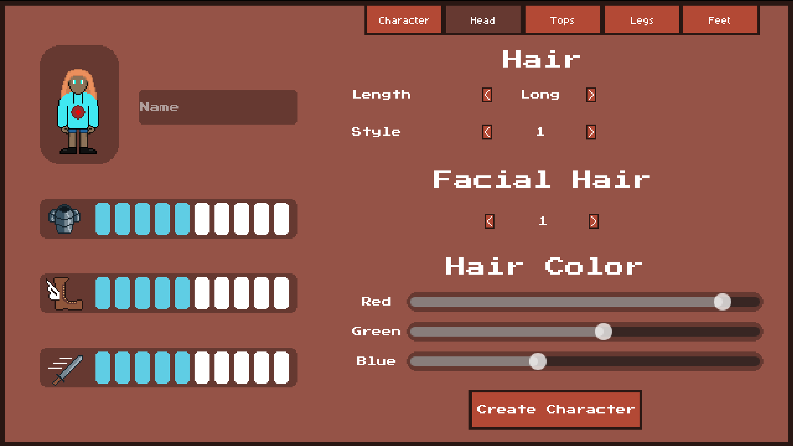
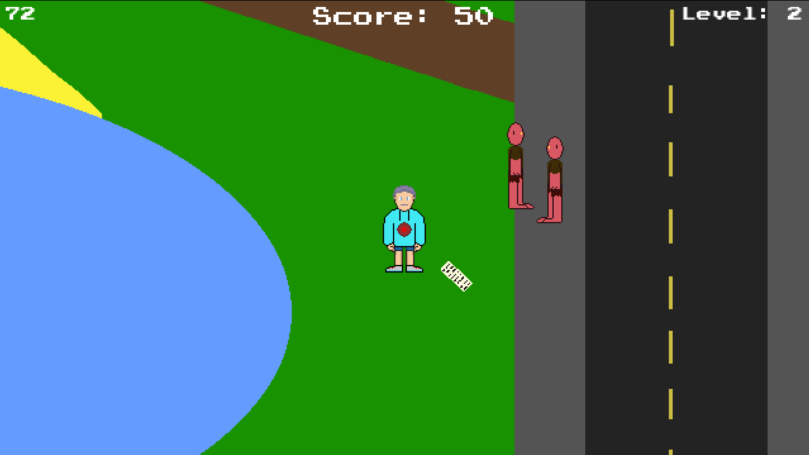

This game was made as part of GDKO (game dev knockout), a game jam tournament where each round is a two week game jam and each round has a task which needs to be included in the game. At the end of each round a number of participants are knocked out with the final round being round 4. I participated in the first 2 rounds and in that time I created a game where you create a character and fight against a cult.
Round 1
Round 1 asked participants to create a player character that the users can customize. For this, I made the character creator for the game. I chose many different customisation options from skin and eye color, to hair and the clothes the character wears. This was implemented with a user interface showing the character and multiple pages of options the user could navigate to create a character. The different clothes had different impacts on a stats bar for armour, movement speed and attack speed which would become useful in round 2. Overall, this round was successful in completing the task, however, it could have been improved through clothing that better matched the theming of the rest of the interface and having more clothing options as it was very limited.
Round 2
Round 2 required participants to create a multifunctional level that includes quick time events. For this I decided to create a game inspired by Vampire Survivors where enemies come and attack the player and the player has to defeat them and survive as long as possible. For this I introduced 2 enemies for the player to fight. The first one is a humanoid which moves slowly and when close to the player, they take damage. The second one is a drone that moves quickly and the player has to avoid them. The quick time event is a parry. When the parry button is pressed, any attacks are stopped and the player can't take any damage for a small window of time. To make the level multifunctional, different areas of the level, when enemies are killed, upgrade different parts of the player. For example, killing enemies in the church increases health and in the car park increases move speed. Overall I met the requirements for this round, however due to other commitments during the development period, I had very limited time to work on the game and as a result certain features weren’t as polished. This resulted in a few bugs and other issues that would not have been included had I been able to dedicate more time to polishing and adding more content to the game.
Conclusion
To conclude, this project was successful in learning how to handle sprites with many changeable features and building an effective top down combat system. However, due to the limited time during the development window for round 2, the game fell behind in what I wanted to implement and the result was the project getting knocked out at the end of the round. It took effective time management to implement all the intended features for round 2 given the limited time. However, this came at the cost of unintended issues being left in the code. I believe the code is written in a way where I could easily expand and add more content in the future should I wish to expand on this project further.

